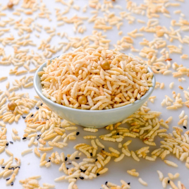
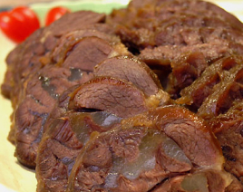
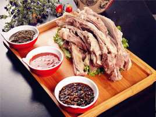

炒米：炒米，蒙语叫做“胡日阿巴达”，就是蒙古米的意思。它是用糜子经过蒸、炒、碾等多道工序加工而成的，清香爽口，充饥耐饿，是别具风味的传统食品。
酱牛肉：酱牛肉保留了牛肉补中益气、强健筋骨、滋养脾胃等多重功效，能提高机体抗病能力，适合筋骨酸软、面黄目眩、气短体虚以及贫血者食用。酱牛肉鲜味浓厚，口感丰厚，经常被切成片状当做下酒菜来食用。冬天食用酱牛肉还有暖胃驱寒的功效，是冬季进补的佳品之一
手把肉：手把羊肉，就是挑选膘肥肉嫩的羊，就地宰杀，扒皮入锅，放入佐料，进行蒸煮，因为净手后吃肉时一手把着肉，一手拿着刀，割、挖、剔、片，把羊骨头上的肉吃得干干净净，所以得名“手把羊肉”。